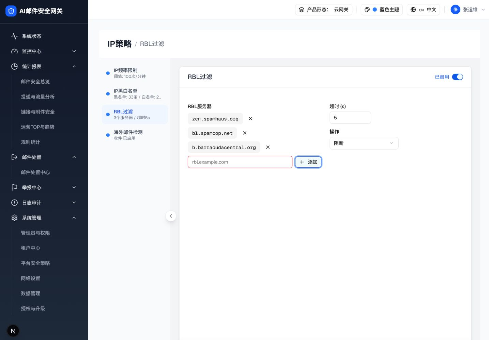
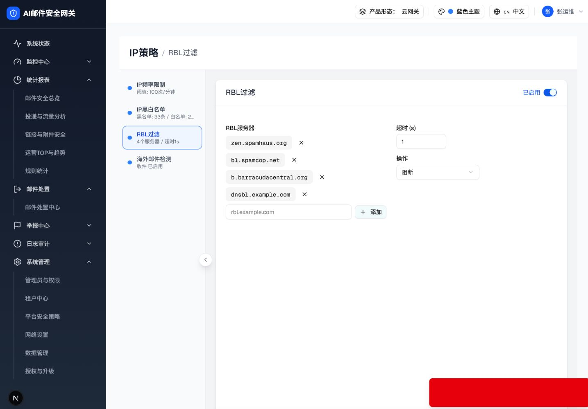

可交互组件预览
RBL 服务器
支持 Enter；输入时清除错误态。试用：空值、
bad_domain、已有地址或新域名。失焦时限制在 1–30；空值/非数字回到 5，越界值钳制到最近边界。
操作agent-browser 真实截图（2026-07-21）


以上均取自运行中的 http://localhost:3001/filter-rules/connection，不是预览 HTML 截图。
逐项交互规格
| 触发 | 状态变化 | 反馈 | 提交影响 |
|---|---|---|---|
| 空值添加 | rblServerInvalid=true；输入框 aria-invalid=true + 红框 | “请输入 RBL 服务器地址” | 不修改列表 |
| 非法 DNSBL 域名 | 保持输入；红框 | “服务器地址格式无效” + 合法示例 | 不修改列表 |
| 重复地址 | trim + lower-case 后比较；红框 | “该 RBL 服务器已存在” | 不修改列表 |
| 合法新地址 | 追加小写域名、清空输入和错误态 | “已添加 RBL 服务器” | hasUnsavedChanges=true |
| 超时失焦 | 空/NaN→5；小于1→1；大于30→30 | “超时时间须在 1–30 秒之间” | hasUnsavedChanges=true |
DOM 树对比
| 对比项 | 既有 agent-browser DOM | 当前实现目标 | 结论 |
|---|---|---|---|
| 面板根 | div.grid.grid-cols-2.gap-6 | 同根结构 | 基线一致 |
| 服务器输入 | input + 添加按钮 | aria-invalid=true 且 class 含 border-destructive；输入时恢复 false | 真实 DOM 通过 |
| 超时输入 | input[type=number] | 实测 min=1 max=30 value=1；99→30、0→1 | 真实 DOM 通过 |
| Toast Portal | 旧证据无此节点 | li[role=status] 分别出现空值、格式、重复和超时提示 | 真实 DOM 通过 |